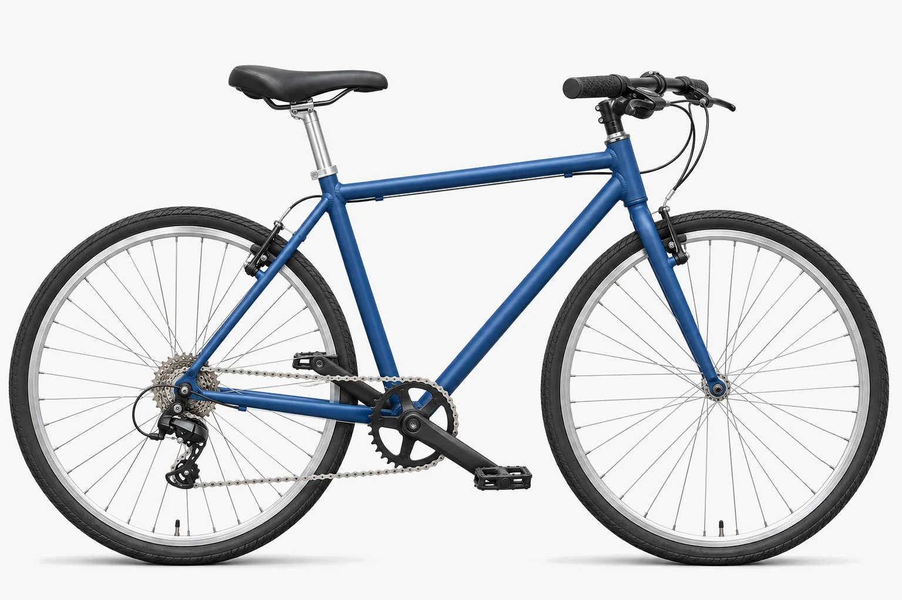

Anatomy of a 7‑Speed Bike
A 7-speed bike has one , the toothed ring by the pedals, and seven on the back wheel. Moving the chain between those seven cogs gives you seven gears: easy ones for hills, hard ones for speed.

The whole bike
Each colour is one of six systems. Hover, tap or tab to a number to see what that part does; Esc clears it.
No part selected.
-
Frame
-
Steering
-
Wheels
-
Drivetrain
-
Brakes
-
Contact points
From pedal to wheel
Seven gears
Gears work like stairs. A low gear is many small, easy steps; a high gear is taking them two at a time: harder, but you cover more ground.
The rear moves the chain between cogs. Drag the slider to shift.
Rear cog 20 teeth 2.20Speed 23.0 km/hEveryday cruising
The tells you how many times the wheel turns for one turn of the pedals.
gear ratio = chainring teeth ÷ cog teeth
In gear 1, 44 ÷ 28 = 1.57: one pedal turn spins the wheel about 1.6 times.
Which gear when. The biggest rear cog, gear 1, is the easiest: use it for hills and starting off. The smallest rear cog, gear 7, is the hardest: use it on flats and downhills for speed.
Why seven. Seven gears let you keep a comfortable , about 70–90 pedal turns a minute, whether you’re climbing, cruising or going downhill. That makes a 7-speed a good fit for commuting, errands and relaxed rides on mixed ground.
All seven gears in numbers
44-tooth chainring, 14–28 freewheel, at 80 rpm.
| Gear | Rear cog | Ratio | Distance per pedal turn | Speed | Best for | |
|---|---|---|---|---|---|---|
| 1 | 28T | 1.57 | 43.1 | 3.43 m | 16.4 km/h (10.2 mph) | Steep hills, starting |
| 2 | 24T | 1.83 | 50.2 | 4.00 m | 19.2 km/h (11.9 mph) | Hills |
| 3 | 22T | 2.00 | 54.8 | 4.36 m | 20.9 km/h (13.0 mph) | Gentle climbs |
| 4 | 20T | 2.20 | 60.3 | 4.80 m | 23.0 km/h (14.3 mph) | Everyday cruising |
| 5 | 18T | 2.44 | 67.0 | 5.33 m | 25.6 km/h (15.9 mph) | Flat roads |
| 6 | 16T | 2.75 | 75.3 | 6.00 m | 28.8 km/h (17.9 mph) | Fast flats, tailwind |
| 7 | 14T | 3.14 | 86.1 | 6.85 m | 32.9 km/h (20.4 mph) | Downhill, sprinting |
How shifting works
- Click the right-hand trigger shifter. It pulls or releases the gear cable by one fixed step; that’s : 7 clicks, one per gear.
- The cable moves the derailleur’s body sideways, carrying the guide pulley under the next cog.
- Keep pedalling and the chain climbs onto the new cog. When the cable is released, a spring in the derailleur pulls it back the other way.
Limit screws and barrel adjuster
Two stop the chain going too far: the H (high) screw stops it falling off the smallest cog, and the L (low) screw stops it going past the largest cog into the spokes. The where the cable enters fine-tunes cable tension: a quarter turn fixes most skipping gears.
The six systems
-
Frame
The frame is two triangles: the main one (top, down and seat tubes) and the rear one ( and ). Triangles keep their shape under load.
-
Steering
The joins handlebar to fork, and bearings let the fork turn in the head tube.
-
Wheels
Tight spokes hold the rim to the , the tyre and inner tube sit on the rim, and the rear hub carries the seven cogs.
-
Drivetrain
Pedals, crank arms, chainring, , chain, seven rear cogs, rear derailleur, shifter and cable: a 1×7 setup. The cogs come as a screw-on or a slide-on , typically 14–28 or 11–28 teeth. There is no front derailleur because there is only one chainring.
Exploded view
-
Brakes
Squeezing a lever pulls a cable that closes the V-brake arms, pressing rubber pads onto the wheel rim. The friction turns motion into heat and slows the wheel. Some 7-speeds use mechanical disc brakes, which squeeze a metal disc at the hub instead.
-
Contact points
Saddle, grips and pedals: where you touch the bike. Their position sets comfort and efficiency.
Choosing and caring for one
| Single-speed | 7-speed (1×7) | 21-speed (3×7) | |
|---|---|---|---|
| Gears | 1 | 7 | 21 (many overlap) |
| Chainrings × cogs | 1 × 1 | 1 × 7 | 3 × 7 |
| Derailleurs | None | Rear only | Front and rear |
| Upkeep | Lowest | Low | Higher |
| Best for | Flat cities | Commuting, mixed terrain | Long rides, steep hills |
Another way to get 7 gears
A 7-speed internal hub, such as the Shimano Nexus 7, hides all seven gears inside the rear hub. It has no derailleur and can shift while you’re stopped at a light, but it is heavier and harder to repair at home.
Keep it running
- Oil the chain every 150–300 km or after a wet ride, then wipe off the excess.
- Pump tyres to the pressure printed on the tyre wall once a week.
- Replace brake pads when the grooves on them are worn away.
- If gears skip or hesitate, check the cable tension: turn the barrel adjuster a quarter turn and test again.
Glossary
- Barrel adjuster
- A small threaded knob that tightens or loosens the gear cable.
- Bottom bracket
- The bearing the cranks spin on.
- Cadence
- How many times you turn the pedals per minute.
- Cassette
- A set of cogs that slides onto the rear hub.
- Chainring
- The large toothed ring attached to the cranks.
- Chainstay
- The frame tube running from the pedals to the rear wheel.
- Cog
- One toothed ring on the rear wheel.
- Derailleur
- The arm that moves the chain from cog to cog.
- Freewheel
- A set of cogs that screws onto the rear hub and lets the wheel coast.
- Gear inches
- A number comparing gears; higher = harder.
- Gear ratio
- Chainring teeth ÷ cog teeth: how many times the wheel turns for one pedal turn.
- Headset
- The bearings that let the fork turn.
- Hub
- The centre of a wheel that spins on bearings.
- Indexing
- Shifting in fixed clicks, one per gear.
- Limit screws
- Screws that stop the derailleur going too far.
- Parallelogram
- The four-bar linkage that swings the derailleur sideways.
- Seat stay
- The frame tube from under the saddle to the rear wheel.
- Stem
- The part that clamps the handlebar to the fork.